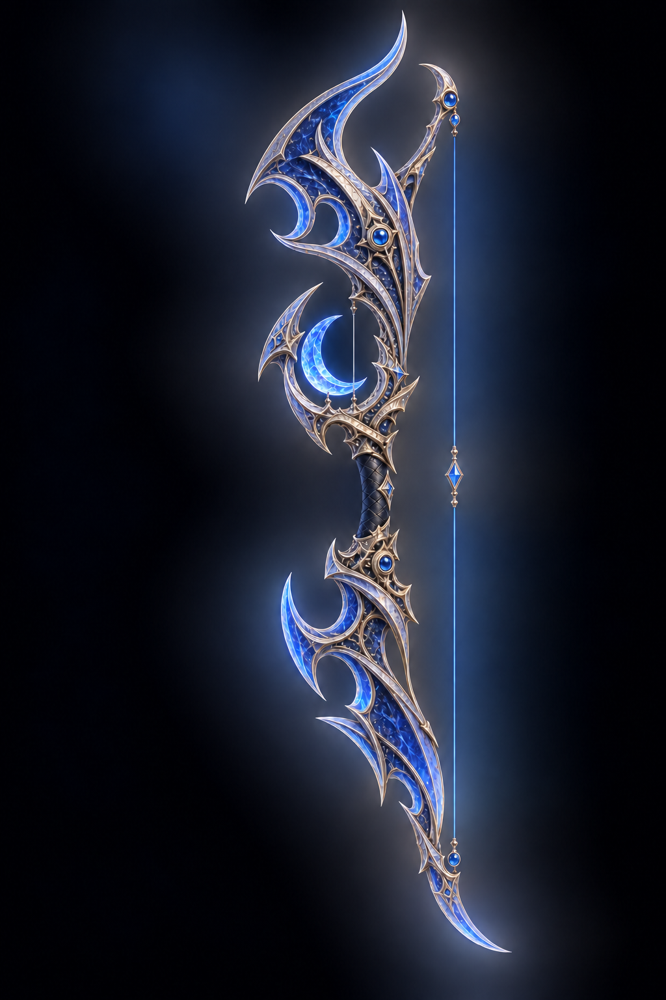
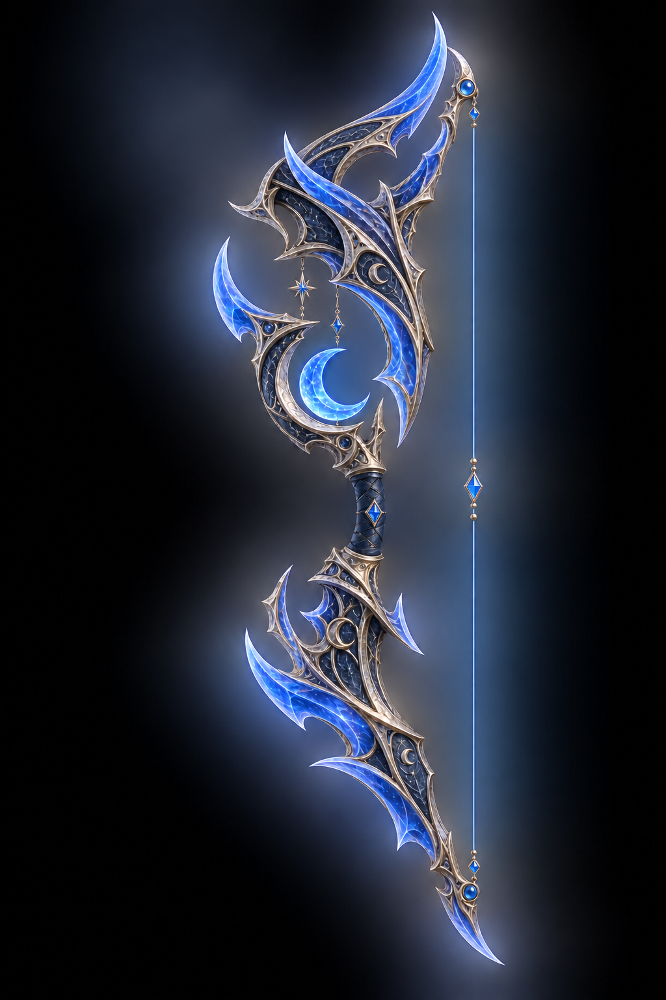
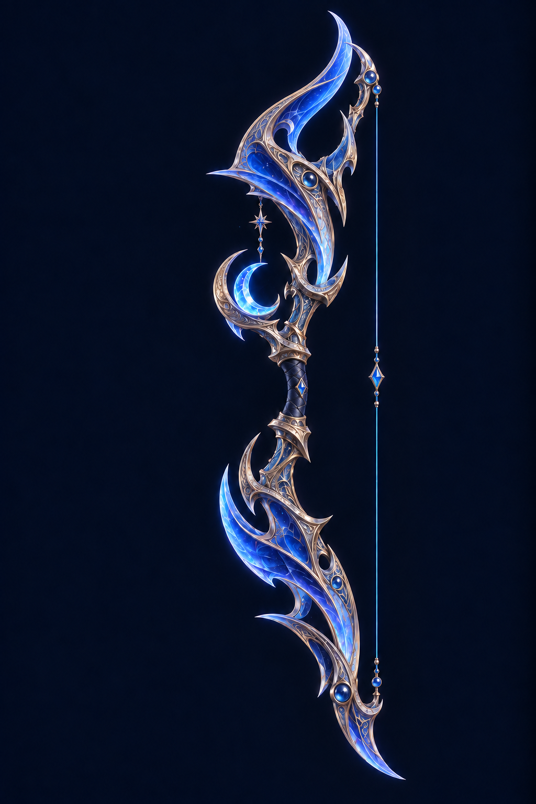

<!doctype html>
<html lang="ko"><meta charset="utf-8"><meta name="viewport" content="width=device-width,initial-scale=1">
<title>푸른달 · 윗뿔 수정</title>
<style>
*{box-sizing:border-box}body{margin:0;background:#060b16;color:#e6eeff;font:16px/1.55 system-ui,sans-serif}header{padding:22px 28px 10px;display:flex;align-items:end;justify-content:space-between;gap:24px}h1{margin:0 0 5px;font-size:25px;font-weight:650}header p{margin:0;color:#97abc9}.grid{display:grid;grid-template-columns:repeat(3,minmax(0,1fr));gap:16px;padding:18px 28px 20px}article{background:linear-gradient(#0b1425,#0b1220);border:1px solid #233853;border-radius:12px;overflow:hidden}article a{display:block;background:#060c18}img{display:block;width:100%;height:min(73vh,900px);object-fit:contain}h2{margin:12px 16px 18px;font-size:19px}footer{padding:0 28px 24px;color:#7589a8;font-size:12px}a{color:#aacdff}header a{font-size:13px;white-space:nowrap}@media(max-width:700px){.grid{grid-template-columns:1fr}header{align-items:start;flex-direction:column;gap:6px}img{height:78vh}}
</style>
<header><div><h1>푸른달 · 윗뿔 수정</h1><p>윗뿔 끝을 활줄 쪽으로 휘게 정리한 시안</p></div><a href="../blue-moon-v2/">기존안 비교</a></header>
<main class="grid">
<article><a href="04-lunar-sovereign-swept.png"></a><h2>04 · 월왕의 장궁</h2></article>
<article><a href="05-eclipse-knight-swept.png"></a><h2>05 · 월식 기사의 장궁</h2></article>
<article><a href="06-twin-crescent-regalia-swept.png"></a><h2>06 · 쌍월의 장궁</h2></article>
</main>
<footer>미리보기 시안 · <a href="prompts.json">생성 프롬프트</a></footer>
</html>
